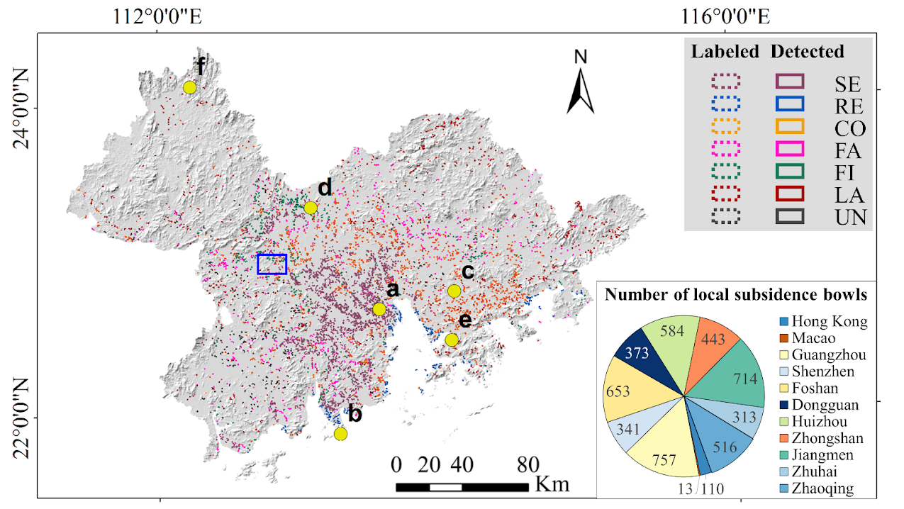
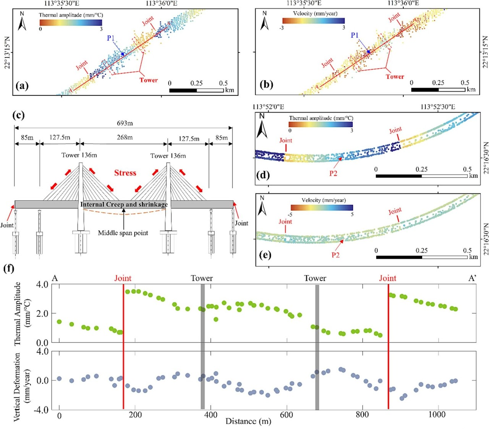

Rapid urbanization and climate change pose unprecedented challenges to global sustainability. Our research explores innovative satellite remote sensing, physical modeling, and AI-driven analytical model to uncover the fundamental processes driving urban geohazards and climate change across multiple spatiotemporal scales. We ultimately aim to enhance resilience and promote sustainable development through data-driven insights.
Featured Research

Subsidence Spatial Pattern Understading
We develop an oriented R-CNN deep learning network to automatically detect and classify subsidence bowls using InSAR measurements and multi-source ancillary data, including geological and lithological, land cover, topographic, and climatic data.

Deformation Time-Series Analysis
We propose a SAR-Transformer method to decompose InSAR time-series signals into various physics-related components and apply the method to evaluate the deformation of the world's longest cross-sea bridge, the Hong Kong-Zhuhai-Macao Bridge.

InSAR Atmospheric Delay Correction
We propose a bidirectional gated recurrent unit (BiGRU) model to correct random and seasonal atmopheric delays adaptively.

DEM Super-Resolution for Improving InSAR Topographic Phase Simulation
We constructed a real-world DEM super-resolution dataset, where the low-resolution and high-resolution DEMs were collected from SRTM and WorldDEM, respectively.

Nonstationary Effects of Natural and Human Factors on Land Subsidence
We apply spatial auto- and cross-correlation analysis to select the most reasonable explanatory variables from nine candidates in each city of the Greater Bay Area.